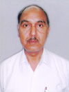
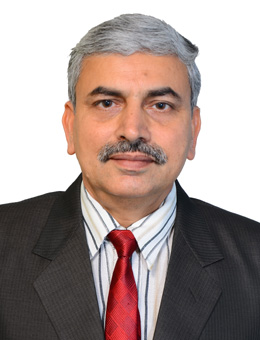

DEPARTMENT OF MECHANICAL ENGINEERING
FACULTY
]
Surjit Angra (Head of Department)
Designation:Professor
Qualification: B.Sc(Engg.) Mech., M.Tech, Ph.D (Mech. Engg.)
Area of Interest :
- Tribology and Machine Design Future Plans To guide Ph.D thesis and M. Tech dissertations in Mech. Engg.
- To undertake sponsored Projects. To organize Technical workshops for the students.
- To organize Seminar/Conference in Mech. Engg. To contribute in the curriculum revision of the dept.
Phone No.: 01744233556
Email: angrasurjit@yahoo.com
br>

Sudhir Kumar
Designation: Professor
Qualification: Ph.D, 1995, National Institute Technology (the then Regional Engineering College), Kurukshetra
Research activities:
- Energy Conservation
- Pollution Control
- Automobile Engineering
Phone No.: 01744-239942, 01744-309379
Email: mail2sudhir@rediffmail.com,sudhirksaxena@indiatime

Dixit Garg
Designation: Professor
Qualification: Ph.D., 1997 REC Kurukshetra (Kurukshetra University, Kurukshetra)
Area of interest:
- Operations and Quality Management
- Just-in-Time(JIT)
- Production Planning and Control
- Manufacturing processes
- Supply Chain Management
- Green Supply Chain Management
- Sustainability
- Lean Manufacturing
- Non-conventional Machining
- Educational Planning
- Industrial Engineering
Phone No.: 01744-233457, 09355211021
Email: dixitgarg@yahoo.co.in, dixitgarg1963@gmail.com, dixitgarg1@nitkkr.ac.in

Dinesh Khanduja
Designation: Professor
Qualification: Ph D (2003), NIT (then REC), Kurukshetra University, Kurukshetra
Areas of Current Interest:
- Six Sigma
- Entrepreneurship Development
- Business Incubation
- TQM
Research Activities -
- On editorial board of two International Journals namely, World Journal of Organizational Dynamics and World Journal of Human Resources.
- Regular reviewer of papers for journals like World Journal of Organizational Dynamics, World Journal of Human Resources, International Journal of Enterprise Network Management and International Journal of Globalization and Small Business.
- Guiding 6 Ph D and 3 M Tech research scholars to carry out innovatiove research in these areas.
- Presented papers on research findings at various national/international conferences, including some in countries like USA, UK and Australia.
Future Plans:
- To organize short term courses for faculty as well as students on Entrepreneurship Development; Business Incubation; TQM etc.
- To organize national/international conferences on areas like Entrepreneurship Development; Business Incubation; TQM etc.
- To try for sponsored research projects on these areas.
- To encourage industry-institute interaction, try for consultancy projects in the areas Six Sigma and TQM.
Phone No.: Extn.-360 (01744) 221655

Hari Singh
Designation: Professor
Qualification: PhD (2001; RECK/KUK)
Area of Interest:
Areas of Current Interest:
- The Areas of current interest include Unconventional Machining Processes
- Advanced Welding, MMCs
- Product and Process Improvement
- Experimental Designs
- Single and Multi-response Optimization
- Mathematical Modeling
Research Activities:
- Supervising a number of research scholars for their PhD work in various emerging areas.
- Future Plans of Academic and Research Activities
- To extend research facilities in the newly developed AMT Lab of the Dept in the form of Hybrid Machining Processes.
- To encourage research scholars for selecting some manufacturing industry based research topics.
Phone No.: Extn-458
Email: hsingh_nitk@rediffmail.com , hsinghfme@nitkkr.ac.in
LABORATORY